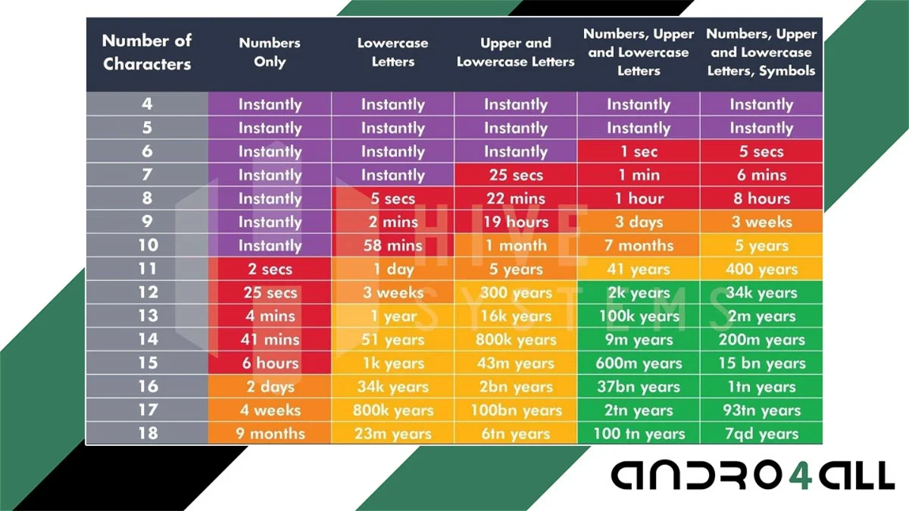

Inventos Alucinantes
IA y la herramienta para modificar la genética humana
|
Cuánto se tarda en hackear una contraseña
|
"Veo", IA de Google lucha con Sora de OpenAI
|
Noticia del dia:
Los chips cerebrales son la
nueva gran moda tecnológica
Nadie sabe qué ocurrirá cuando
se queden obsoletos
- ¿Qué sucede cuando una empresa de chips cerebrales no puede responsabilizarse de los dispositivos que implantó?
- Este móvil ultrabarato Motorola te conquista con su pantalla Full HD+ y su cámara de 50 MP por solo 109 euros
Los chips cerebrales se han convertido en una de las mayores esperanzas para las personas que padecen problemas cerebrales o trastornos mentales, pero, ¿qué sucede cuando quedan obsoletos? Durante los últimos años la nueva industria se ha enfocado en las hipotéticas ventajas que posibilitan dichos dispositivos, pero apenas han hablado de una posibilidad real: que los chips queden obsoletos o, peor, que las compañías responsables cierren. En dichos casos, ¿quién se responsabiliza de ellos?
Un problema con antecedentes
Al margen de la conocida Neuralink y las innovaciones chinas, cada vez más entidades desarrollan chips cerebrales o dispositivos corporales, por lo que resulta inevitable que muchas de ellas no sean exitosas y cierren. Según un informe de Neurotech Reports, en 2026 el mercado de dispositivos "neurotecnológicos" alcanzará los 17.100 billones de dólares en todo el planeta, lo que indica su inminente explosión comercial.
Muchas entidades implantarán su tecnología a usuarios, pero acabarán cerrando. Será entonces
cuando se plantea la pregunta de qué sucede cuando un chip queda obsoleto o la empresa
responsable cierra. Lo cierto es que ya existen varios casos. No solo ha acontecido con
chips cerebrales, sino también con otros para distintas partes del cuerpo.
En 2019 Atonomic Technologies (ATI) cerró sus puertas. La empresa era responsable de un
tratamiento para las cefaleas en racimo mediante software. Debido a su cláusula, más de 700
personas no pudieron acceder al software patentado para re-equilibrarlo y que continúe
siendo efectivo. Por suerte para ellos, Unity HA obtuvo la propiedad intelectual de ATI y en
2022, la Administración de Alimentos y Medicamentos (FDA) estadounidense le otorgó el
estatus de dispositivo innovador, abriendo las puertas a su re-operatividad.
Algo similar sucedió con Nuvectra, especializada en chips para la médula espinal que mitigan
el dolor crónico. También pasó con Stimware, que, al igual que la anterior, diseñaba chips
para la médula espinal. Por otro lado, Second Sight, creadora de implantes de retina para
restaurar la visión, cesó sus operaciones en dicho campo, lo que se sumó a la marcha de
responsables clave.
Todo ello, y la posibilidad de que se convierta en una constante, ha derivado en la adopción
del término "abandono de dispositivo neurológico". Podría convertirse en un término común
dentro de poco, pero como no está claro exactamente cómo acuñarlo, un estudio recogido en la
revista científica JAMA intenta acotar su definición y esclarecer qué significa
concretamente.
Tambien te puede interesar: